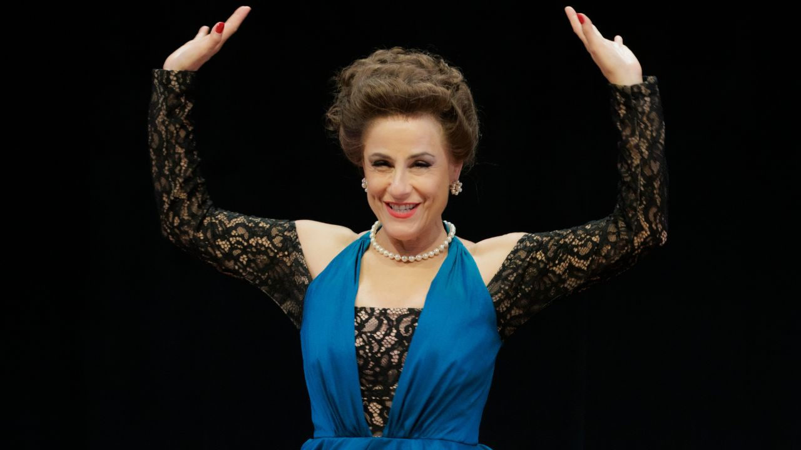

“Minha Estrela Dalva”: Renato Borghi homenageia Dalva de Oliveira em musical inédito com Soraya Ravenle no papel da diva

Um amor de infância que atravessou décadas — e virou cena. “Minha Estrela Dalva”, musical escrito e estrelado por Renato Borghi, estreia em 28 de março, no Teatro do SESI-SP (Centro Cultural Fiesp, Av. Paulista), em temporada com entrada gratuita e ingressos limitados. Em um jogo entre memória, delírio e realidade, o espetáculo revisita a relação profunda de Borghi com Dalva de Oliveira, a estrela máxima da era de ouro do rádio, antes e depois de conhecê-la.
“Tudo começou com um Renato ainda menino”, relembra Borghi: aos seis anos, ele ganhou da mãe um disco de Branca de Neve, no qual a voz da princesa era interpretada por Dalva. A partir dali, nasce uma paixão “avassaladora” que atravessaria a infância, os palcos, a contracultura e culminaria em um encontro real e improvável poucos anos antes da morte da cantora. É desse vínculo — de fã, amigo, confidente e “filho artístico” — que Borghi parte para construir o que define como um acerto de contas amoroso com sua musa, às vésperas de completar 89 anos.
Em 2026, essa memória ganha corpo através de um encontro de gigantes: Soraya Ravenle assume o centro da cena como Dalva de Oliveira, trazendo não uma caricatura da “Rainha do Rádio”, mas o mito humano — a mulher que cantou “de peito aberto”, enfrentou moralismos, escândalos e linchamentos públicos, e transformou cada golpe em canção. Ravenle, que começou sua trajetória no coro de “A Estrela Dalva” (1987), sucesso de Borghi com Marília Pêra, retorna agora para encarnar a própria Estrela.
A dramaturgia se organiza como um “delírio documentado”: Borghi invade o camarim de Dalva para propor um sonho que a vida interrompeu — um espetáculo revolucionário em que ela cantaria Bertolt Brecht e Kurt Weill. Nessa estrutura, ele divide a cena com a própria juventude: Elcio Nogueira Seixas, que também dirige o espetáculo, interpreta o Renato de 1969, jovem ator da contracultura entre o Teatro Oficina e o glamour do rádio. Completa o triângulo Ivan Vellame, que dá voz aos amores de Dalva — especialmente Herivelto Martins — e aos conflitos públicos e midiáticos que marcaram aquele tempo.
A direção artística é assinada por Elias Andreato e Elcio Nogueira Seixas, com direção musical e arranjos de William Guedes. O universo visual do espetáculo reúne cenário de Márcia Moon, luz de Wagner Pinto e figurinos de Fábio Namatame, criando um ambiente onde o glamour das rádios dos anos 1950 encontra a crueza do teatro épico.
Sinopse
“Minha Estrela Dalva” não é uma biografia: é um encontro impossível. Renato Borghi entra no camarim de Dalva de Oliveira para realizar um sonho interrompido e, nesse “delírio documentado”, passado e presente se fundem. Em cena, Borghi dialoga com Dalva — vivida por Soraya Ravenle — enquanto o próprio Borghi jovem (Elcio Nogueira Seixas) reaparece como espelho de uma paixão antiga. Ivan Vellame interpreta figuras amorosas centrais da trajetória da cantora, ampliando o olhar sobre sua vida íntima e pública.
Elenco
Renato Borghi (ele mesmo)
Soraya Ravenle (Dalva de Oliveira)
Elcio Nogueira Seixas (Renato Borghi jovem)
Ivan Vellame (Herivelto Martins, Bruno e Kiko)
Músicos
Nath Calan (bateria/percussão), Giancarlo Barletta (baixo), Gustavo Fiel (piano elétrico), William Guedes (violão), Denise Ferrari (violoncelo), Eliza Monteiro (viola), Mica Marcondes (violino)
Ficha técnica (principais)
Idealização: Renato Borghi e Elcio Nogueira Seixas
Dramaturgia: Renato Borghi
Direção artística: Elias Andreato e Elcio Nogueira Seixas
Direção musical e arranjos: William Guedes
Direção de movimento: Roberto Alencar e Irupe Sarmiento
Cenografia: Márcia Moon
Figurinos: Fábio Namatame
Desenho de luz: Wagner Pinto
Som: Cecília Lüzs (com Roberta Helena – associado)
Produção executiva: Camila Bevilacqua
Assessoria de imprensa: Agência Taga
Acessibilidade: audiodescrição (Gangorra) e Libras (Space Libras)
Serviço
“Minha Estrela Dalva”Temporada: 28/03 a 12/07
Local: Centro Cultural Fiesp | Teatro do SESI-SP — Av. Paulista, 1313 (em frente à estação Trianon-Masp)
Sessões: quinta a sábado, às 20h | domingo, às 19h
Duração: 90 min
Classificação: 14 anos
Ingressos: entrada franca, com retirada/ reserva (quantidade limitada) — em breve em www.sesisp.org.br/eventos
Acessibilidade: sempre aos sábados e domingos, com intérprete de Libras e audiodescrição
Instagram: @dalvaomusical